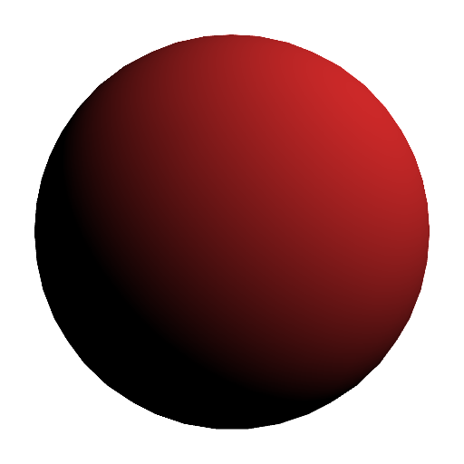

Diffuse lighting models matte surfaces.
|  | $\V{c}_d=\V{c}_o\,\V{c}_l\,\max(\V{n}\cdot\V{l}, 0)$ |
The color of the object $\V{c}_o$ is modulated by the color of the light $\V{c}_l$, and this product is scaled by the dot product of the normal $\V{n}$ and light $\V{l}$ vectors. Care is taken to ensure this dot product is not negative.